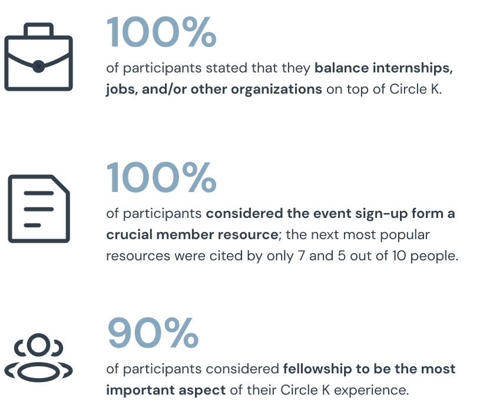
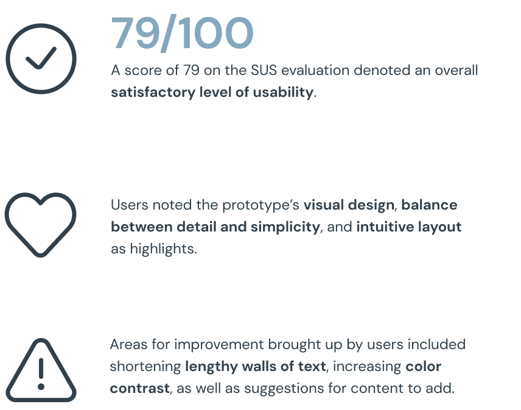
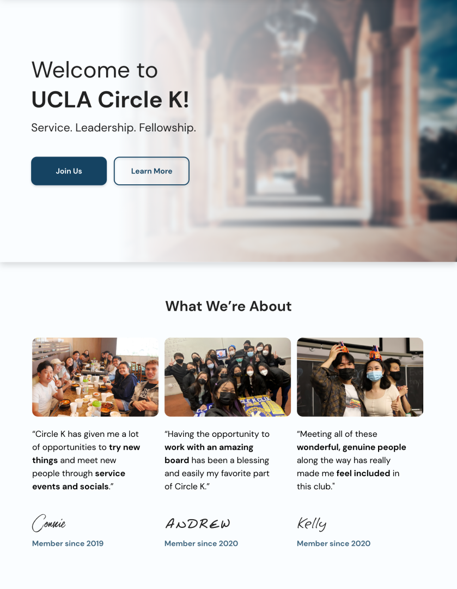
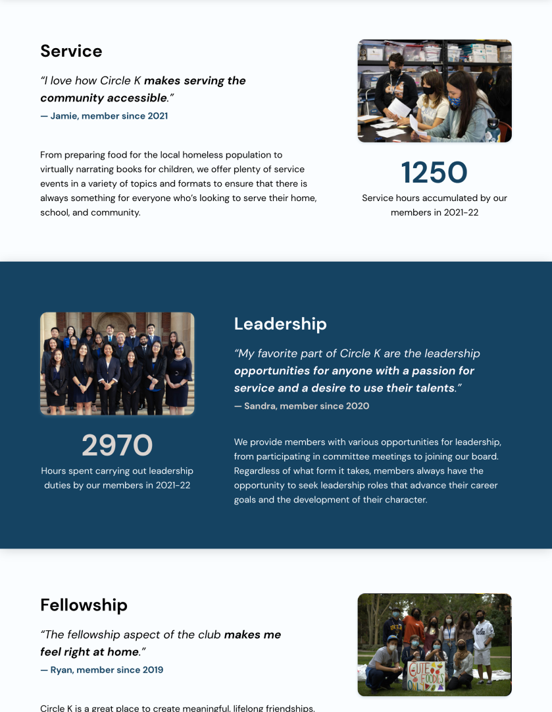
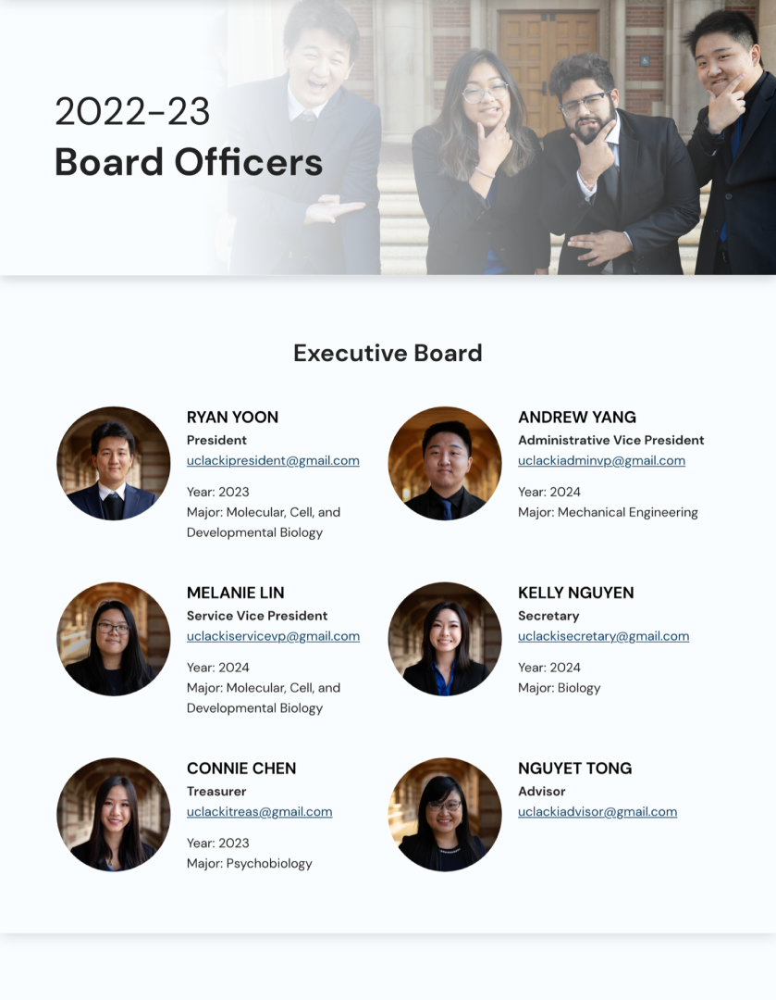
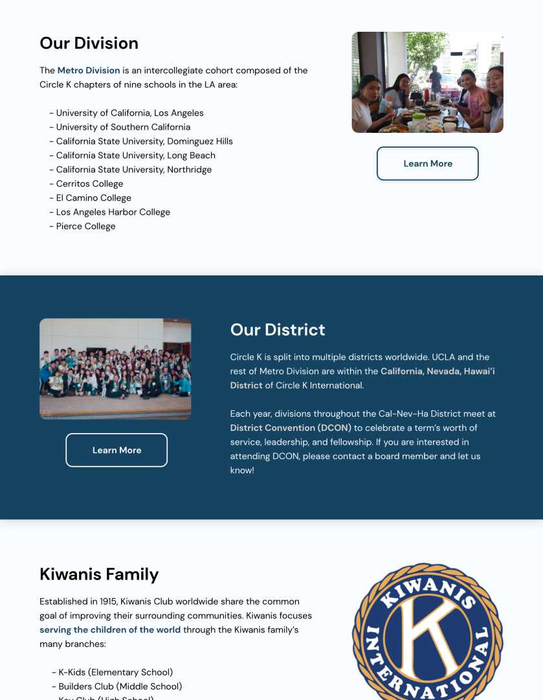
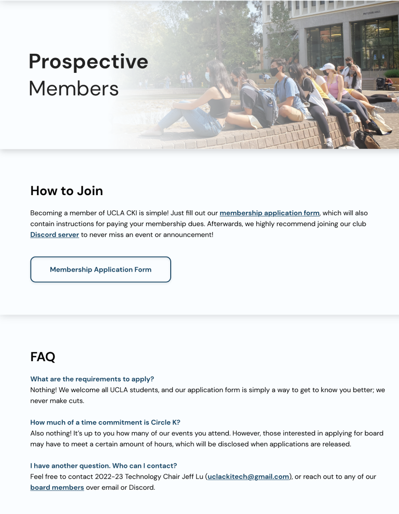
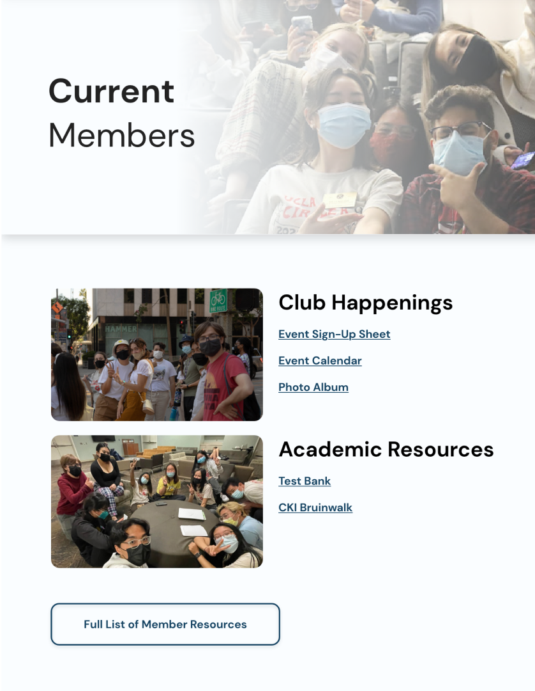
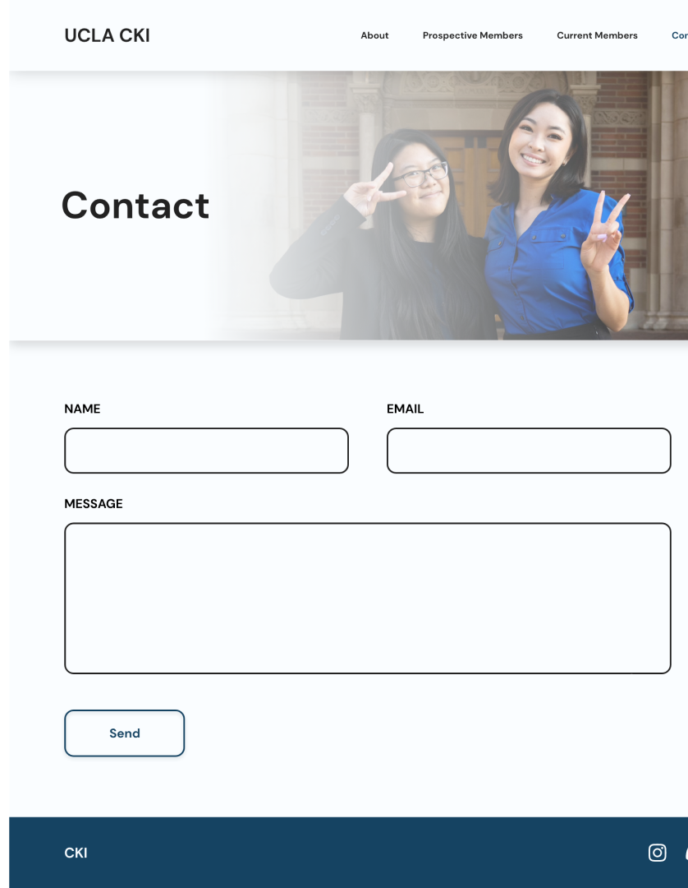

— Martin Luther King Jr.
Timeline
Jul - Aug 2022
Platform
Web Application
Role
UI/UX Designer
Toolkit
Adobe XD
Circle K International (CKI) is the world’s largest collegiate service organization. UCLA’s chapter stands at the forefront of CKI, earning the honor of “Outstanding Total Achievement” at the 2022 District Convention and generating thousands of volunteering hours and charity funds annually.
The list of resources available to UCLA CKI members is extremely robust, ranging from service event sign-up sheets to test banks. In addition, the club has an overarching theme every year (this year’s was Animal Crossing).
With this in mind, the organization’s current website lacks ease of access to resources, nor does it convey a strong sense of theme or visual identity. As a result, members can feel confused or overwhelmed rather than assisted by the club website.
As the organization’s director of technology, I was placed in command of the website’s end-to-end redesign, from ideation to launch.
In the process, I worked in tandem with the organization’s graphics director, who provided Animal Crossing drawings to be integrated into the design. I also communicated with the club’s executive board to ensure that designs aligned with the desired “image” of the organization.
The scope of the redesign extended to the club’s entire website, including a welcome splash page, “about” pages, asset repositories, and more.
The task was also to be completed in a short time frame, starting no earlier than the mid-summer reveal of the new club theme, and finishing no later than the beginning of the new school year in September.
Finally, because the website is hosted through Weebly, I was somewhat restricted in the designs I could produce due to inherent implementation limitations.
Before attempting to create my own designs, I conducted an audit of the websites of 3 other UCLA service organizations, 1 other Circle K branch, and 1 non-collegiate, LA-based service organization.
In doing so, I identified 8 features that made websites for service organizations more effective, whether as means of recruitment or member retention. I would later take special care capitalizing off of these factors when designing Circle K’s own website.
Next, I reached out to 10 current Circle K members and invited them to participate in written interviews to find out more about the range of their values and experiences. I found that:
Upon the creation of my first working prototype, I gathered 4 participants for a System Usability Scale in order to gauge the design’s effectiveness from a birds-eye view. I found that:
Users are greeted with a familiar view of UCLA’s Royce Hall, followed by promotional pictures and quotes sourced directly from current members.
The site’s primary source of “About” content. Detailed descriptions of Circle K’s three tenets, each accompanied by quotes, photos, and quantified measures of impact.
Contact information for each of the club’s 18 board officers, alongside headshots and brief biographies to foster a sense of familiarity.
Descriptions of what Circle K looks like beyond the university level, for those who want to get more involved.
A succint set of action items for those looking to join the club, along with an FAQ section, designed to facilitate and demystify the onboarding process.
A one-stop shop for the club’s most frequently accessed resources, including a link to an external repository of every resource the club has to offer.
A no-frills contact form for those with a quick question. All form responses directed to yours truly!
I sought to create a friendly, clean look to create a welcoming presence for new and current members alike.
Throughout, I utilized blue and beige to elicit impressions of prestige and humanitarianism. These colors also naturally aligned with Circle K’s official colors and UCLA CKI’s theme for this year, Animal Crossing.
Working on UCLA CKI’s website was my first foray into the art of designing for a “real-world” project, as opposed to a concept. As such, I was able use the opportunity to streamline a design process that works best for me, and gained a new appreciation for the importance of visual identity and pathos-centered design in the world of marketing. Through the extensive research that the project demanded, I also gained new insight about the importance of keeping the user front and center every step of the way, as their needs and thought processes do not always align with what I, as a designer, might expect.
Process DeckNext Case Study: Pilot